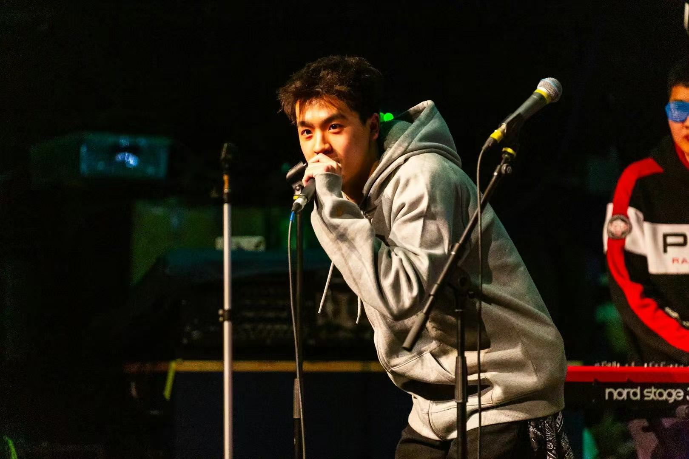
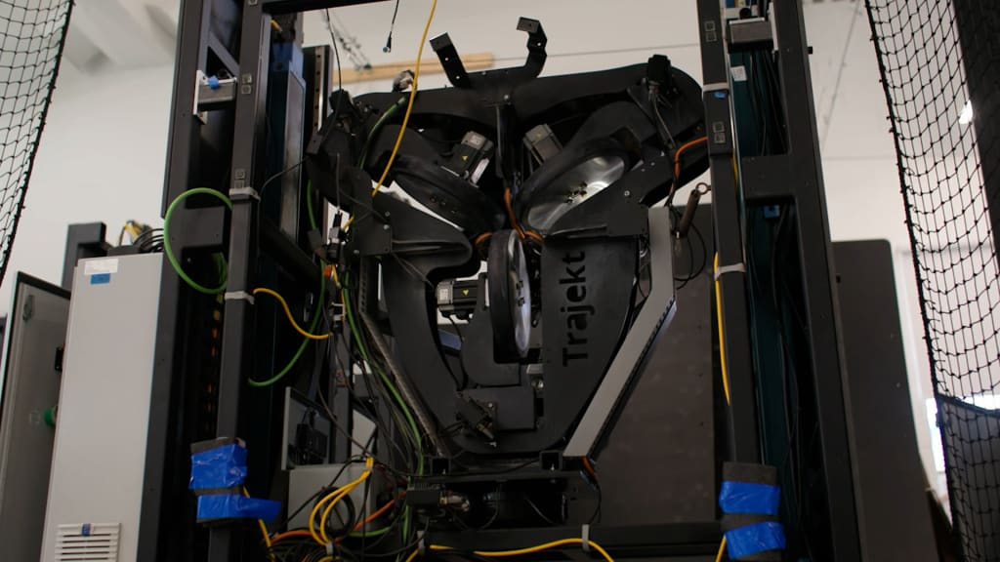
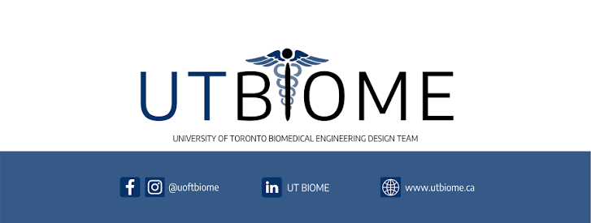
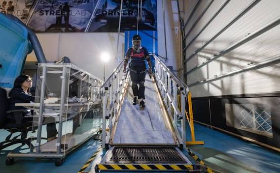
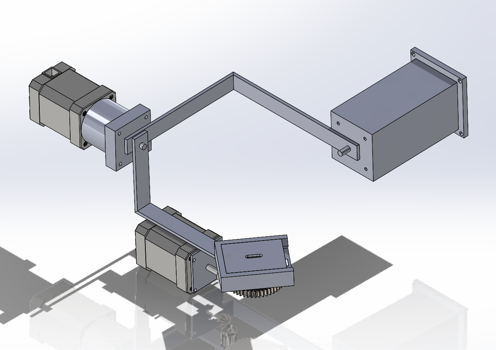
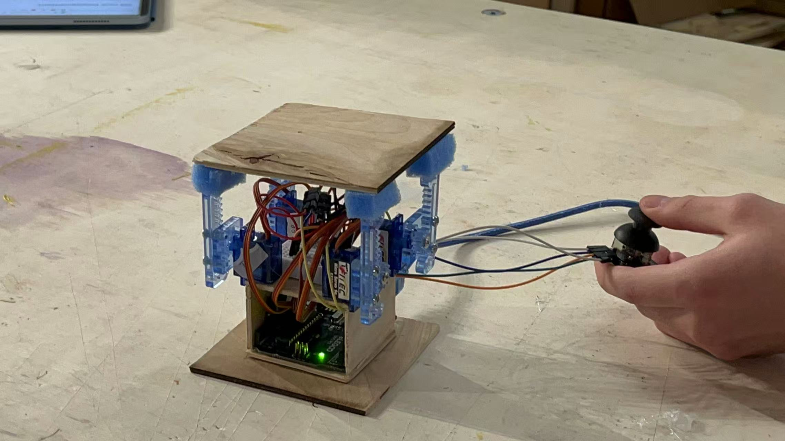
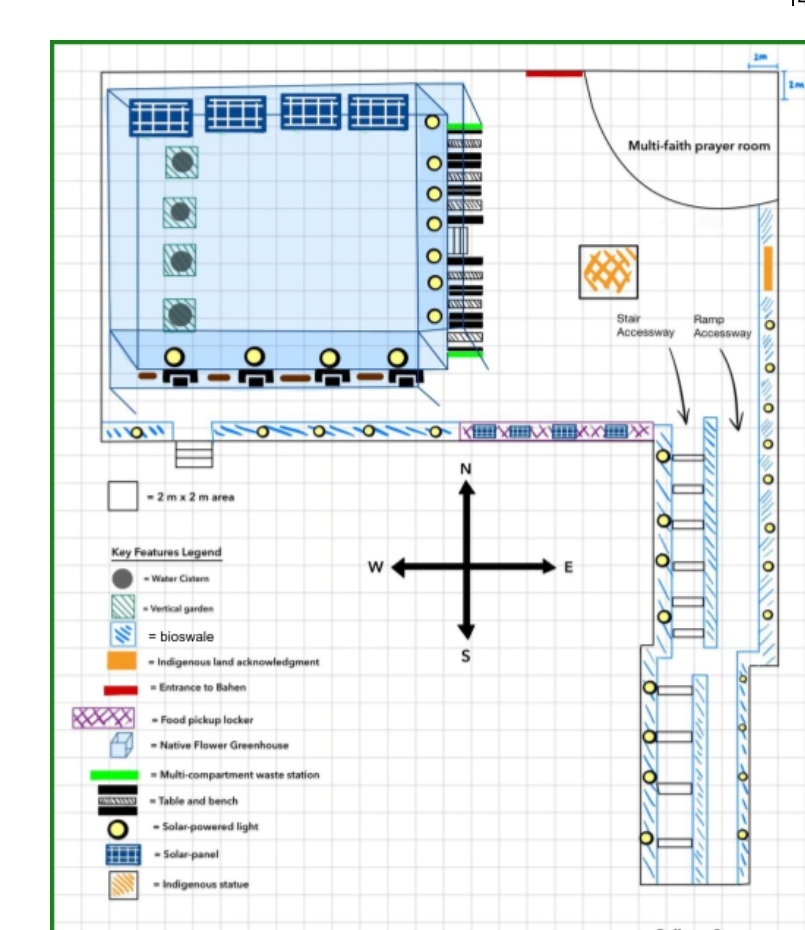

SOLIDWORKS
FUSION
Mechanical CAD
SolidWorks · Fusion 360 · assemblies · mechanisms · 2D engineering drawings · component interfaces
Hi, I am
Mechanical Engineering @ University of Toronto
“If you really want to be great at something you have to truly care about it. If you want to be great in a particular area, you have to obsess over it.”
— Kobe Bryant
Interested in
Welcome to my personal portfolio, where I showcase my experience, projects, and engineering skills.

01
A quick view of each role. Open a card for responsibilities, test work, research workflows, and details.

JUN 2026 — PRESENT
↗Trajekt Sports
Test and validate robotic pitching systems through structured performance, repeatability, durability, and comparative hardware testing.

SEP 2026 — PRESENT
↗UT BIOME
Ongoing student design-team role exploring neurotechnology directions and shaping an engineering project from its earliest stage.

JUL 2025 — SEP 2025
↗UHN · KITE Research Institute
Supported footwear slipperiness and fall-risk research through experimental workflows, computer-vision dataset preparation, and lab documentation.
02
Independent case studies with the design process, engineering evidence, CAD, and documentation kept together.

YEAR 2 DESIGN · MIE243
System architecture · SolidWorks · concept selection · mechanical design documentation

YEAR 1 DESIGN · APS112
Research translation · actuator architecture · prototyping · test planning

YEAR 1 DESIGN · APS111
Stakeholder analysis · requirements · ideation · decision matrices
03
Reserved for verified credentials.
Coming next.
CAD and certification credentials will be added when ready.04
Tools matter. So do test discipline, documentation, and the decisions behind the design.
SolidWorks · Fusion 360 · assemblies · mechanisms · 2D engineering drawings · component interfaces
Test matrices · repeatability · endurance · calibration · root-cause analysis · failure tracking
Requirements · stakeholder analysis · concept generation · feasibility checks · Pugh charts · weighted decision matrices
Technical reports · design rationale · test plans · Gantt planning · revision control · final proofing · cross-team updates
MATLAB · Python · C/C++ · Excel · Minitab · data cleaning · modelling and simulation
Most interested in physical systems that affect movement, training, safety, or recovery — especially in sports and health.
05
Performing with my hip-hop band and playing basketball taught me to communicate under pressure, take responsibility for a team, and bring competitive energy into the way I engineer.
I lead a small music group by organizing rehearsals, coordinating performances, and guiding creative direction — strengthening leadership, teamwork, and communication.
HOOPS
Played competitively · 2023 — Present
24CARDS / BUSINESS
2023 — Present
Sourcing, pricing, negotiation, margin tracking, and fulfillment — a small market where details matter.
TEACH
2022 — Present
Math, physics, and chemistry support for 15+ students, plus university application guidance.
06
LinkedIn and GitHub can slot in here when ready.